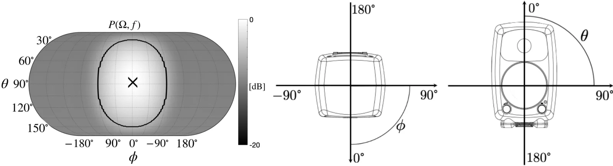
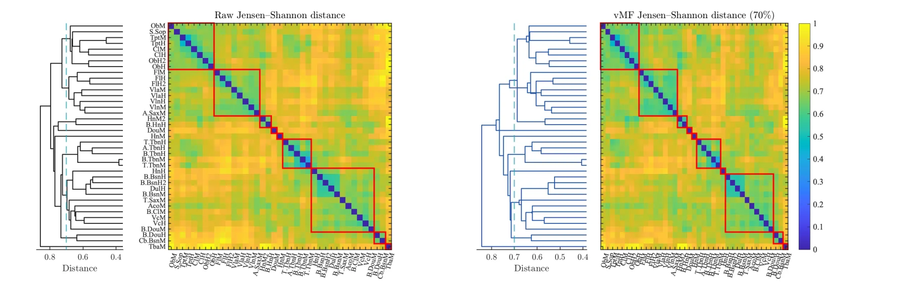

Abstract
Directivity is a defining feature of musical-instrument radiation and changes strongly with frequency. Measured directivity datasets are now used in sound-field simulation and spatial audio, but full spherical maps are heavy to store, hard to browse and costly to compare. We describe the directional energy in each band as a distribution on the sphere and fit it with a small mixture of von Mises-Fisher lobes, with complexity set by a target similarity. The result is a compact, interpretable representation that can be compared across instruments and bands, even when radiation has no single dominant direction.
Method
Directivity is expanded in spherical harmonics up to order 4, as supported by a 32-channel spherical array, and converted into a nonnegative energy pattern for each band. The pattern is normalized into a distribution on the sphere and fitted with the smallest mixture of von Mises-Fisher components that reaches a target similarity. Each component is a lobe with a direction, a concentration and a weight.

Results
On the TU Berlin database of 41 modern and historical orchestral instruments, the mean compression factor is about 6.3 at 50% target similarity, 4.9 at 70%, 2.5 at 90% and 1.7 at 95%. Below a few hundred hertz one component is usually enough; complexity grows above about 1 kHz, where secondary lobes appear. At the 70% operating point the pairwise distances between instruments are preserved with high correlation.

Interactive demo
The companion page explains the method step by step, lets you browse the instrument corpus, compare compression against target similarity and inspect the 3D vMF approximation of each instrument.
Cite this work
G. Greco, M. Pezzoli, R. Malvermi, G. M. Ricci, and F. Antonacci, “A Compact Statistical View of Musical-Instrument Directivity,” presented at the International Symposium on Musical Acoustics (ISMA), Helsinki, 2026. arXiv: 10.48550/arXiv.2611.02927
@inproceedings{greco2026directivity,
title = {A Compact Statistical View of Musical-Instrument Directivity},
author = {Greco, Gioele and Pezzoli, Mirco and Malvermi, Raffaele and Ricci, Gian Marco and Antonacci, Fabio},
booktitle = {Proc. International Symposium on Musical Acoustics (ISMA)},
address = {Helsinki, Finland},
year = {2026},
note = {arXiv:2611.02927}
}